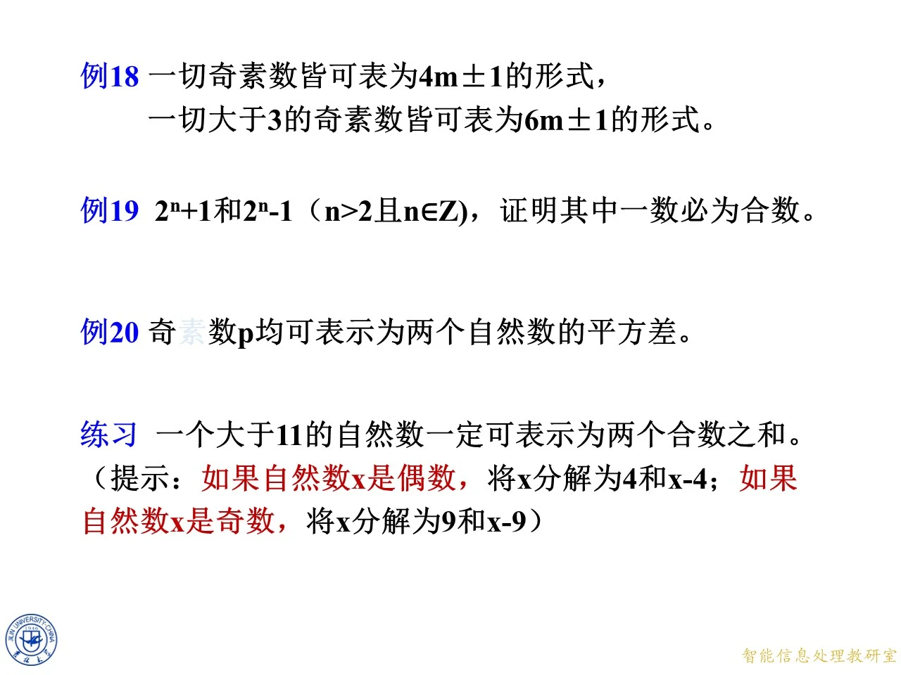
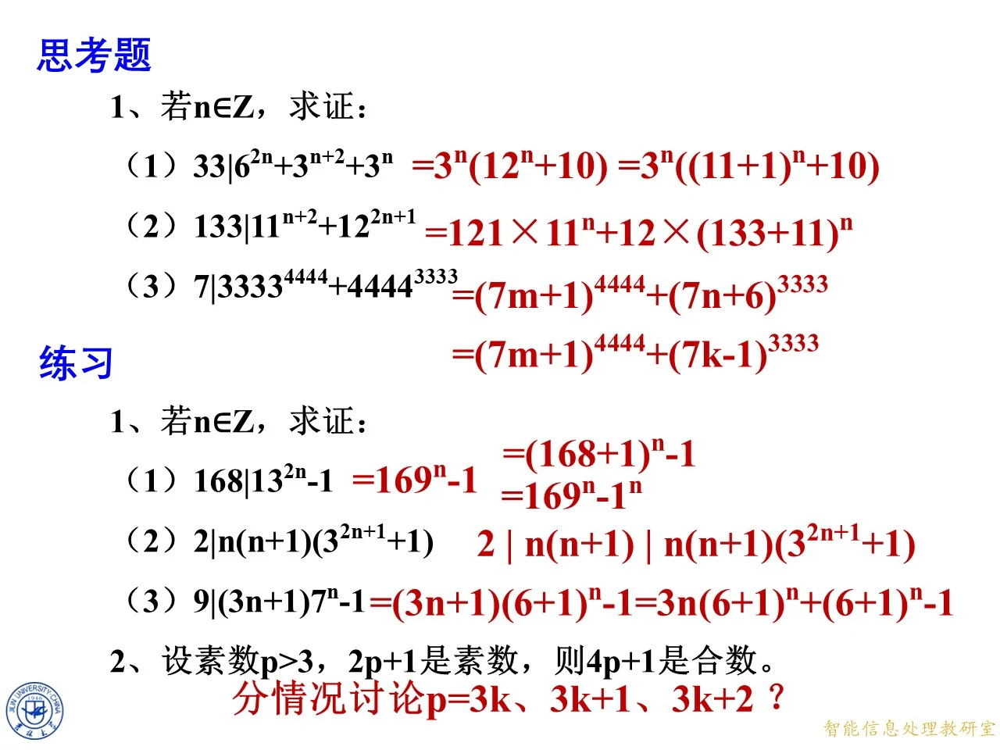
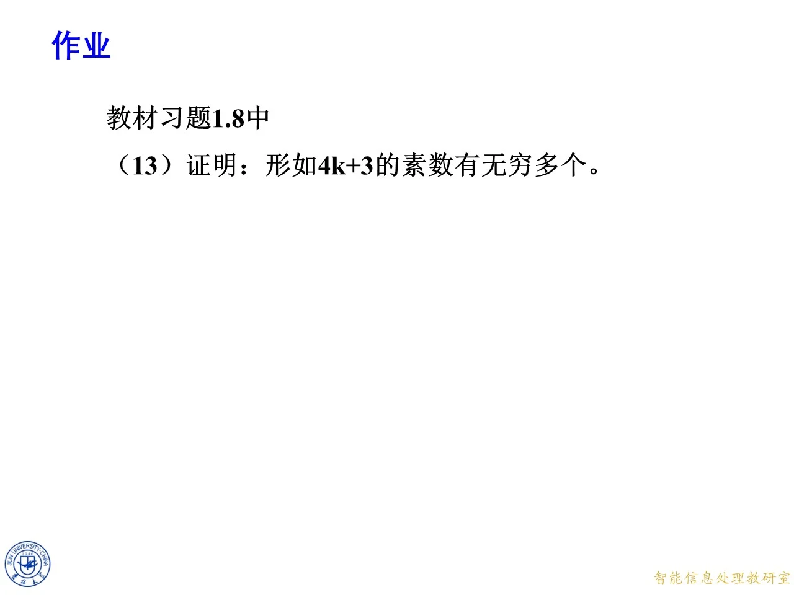

本主题是一组围绕素数的形式特征的证明题与思考题：例 18 研究奇素数在模 4 与模 6 下只能落在哪两个剩余类里，例 19 与例 20 考察二 的幂加减一这样的数与平方差表示，其后的思考题与练习则训练用凑同余、拆公因子的技巧证明各种整除关系。这些内容都建立在前一主题的素数定义与判别法之上，技巧核心是把整除性证明转化为剩余类的分类讨论或恒等变形。它们也是第一章后续（最大公因数、整数分解）开始之前最好的一次整除性质综合演练。
例 18：奇素数的 4 m ± 1 4m\pm1 4 m ± 1 6 m ± 1 6m\pm1 6 m ± 1
◆ p.239-241 ｜例 18
例 18：一切奇素数皆可表为 4 m ± 1 4m\pm1 4 m ± 1 6 m ± 1 6m\pm1 6 m ± 1
证明（1）：任取奇素数 x x x x x x
假设余数为 0，即 x = 4 m x=4m x = 4 m m > 1 m>1 m > 1 m = 1 m=1 m = 1 x = 4 x=4 x = 4 x x x x x x
假设余数为 2，即 x = 4 m + 2 = 2 ( 2 m + 1 ) x=4m+2=2(2m+1) x = 4 m + 2 = 2 ( 2 m + 1 ) m ≥ 1 m\ge1 m ≥ 1 x x x x x x
因此 x x x x = 4 m + 1 x=4m+1 x = 4 m + 1 x = 4 m + 3 = 4 ( m + 1 ) − 1 x=4m+3=4(m+1)-1 x = 4 m + 3 = 4 ( m + 1 ) − 1 4 m ± 1 4m\pm1 4 m ± 1
证明（2）：任取奇素数 x > 3 x>3 x > 3 x x x
余数 0：x = 6 m x=6m x = 6 m m > 1 m>1 m > 1
余数 2：x = 6 m + 2 = 2 ( 3 m + 1 ) x=6m+2=2(3m+1) x = 6 m + 2 = 2 ( 3 m + 1 ) m ≥ 1 m\ge1 m ≥ 1
余数 3：x = 6 m + 3 = 3 ( 2 m + 1 ) x=6m+3=3(2m+1) x = 6 m + 3 = 3 ( 2 m + 1 ) m ≥ 1 m\ge1 m ≥ 1 x > 3 x>3 x > 3
余数 4：x = 6 m + 4 = 2 ( 3 m + 2 ) x=6m+4=2(3m+2) x = 6 m + 4 = 2 ( 3 m + 2 ) m ≥ 1 m\ge1 m ≥ 1
因此余数只能为 1 或 5，即 x = 6 m + 1 x=6m+1 x = 6 m + 1 x = 6 m + 5 = 6 ( m + 1 ) − 1 x=6m+5=6(m+1)-1 x = 6 m + 5 = 6 ( m + 1 ) − 1 6 m ± 1 6m\pm1 6 m ± 1
这个证明的骨架是"带余除法 + 逐类排除"：除数确定后剩余类有限，每一类用一个具体因数（2、3 或 6）说明它装不下素数。注意两处前提的差异——(1) 只要求奇素数，(2) 要求大于 3，因为 3 本身除以 6 余 3，正好落在被排除的类里。
拓展 （课件外补充）：这两条都是素数的必要条件 而非充分条件，不能倒过来当判据用。例如 9 = 4 × 2 + 1 9=4\times2+1 9 = 4 × 2 + 1 4 m + 1 4m+1 4 m + 1 25 = 6 × 4 + 1 25=6\times4+1 25 = 6 × 4 + 1 6 m + 1 6m+1 6 m + 1 6 m ± 1 6m\pm1 6 m ± 1 n > 3 n>3 n > 3 6 m ± 1 6m\pm1 6 m ± 1

课件原图 · 9月9日授课 · 第 248 页 查看前后已收录原页 → 例 19 与例 20：代数恒等式下的素数
◆ p.242
本页先复述例 18 的结论作为承上，随后抛出例 19：2 n + 1 2^n+1 2 n + 1 2 n − 1 2^n-1 2 n − 1 n > 2 n>2 n > 2 n ∈ Z n\in\mathbb Z n ∈ Z 2 2 2
◆ p.243-244 ｜工具页：两个代数公式
p.243 为过渡页。p.244 列出后面证明要用到的两个代数公式：
( x + y ) n = ? (x+y)^n=? ( x + y ) n = ? x n − y n = ? x^n-y^n=? x n − y n = ?
并提示：当 n = 2 n=2 n = 2 x 2 − y 2 = ( x − y ) ( x + y ) x^2-y^2=(x-y)(x+y) x 2 − y 2 = ( x − y ) ( x + y ) x n − y n = ( x − y ) ( x n − 1 + x n − 2 y + ⋯ + x y n − 2 + y n − 1 ) x^n-y^n=(x-y)(x^{n-1}+x^{n-2}y+\cdots+xy^{n-2}+y^{n-1}) x n − y n = ( x − y ) ( x n − 1 + x n − 2 y + ⋯ + x y n − 2 + y n − 1 ) d ∣ A n − B n d\mid A^n-B^n d ∣ A n − B n d ∣ A − B d\mid A-B d ∣ A − B
拓展 （课件外补充）：x n − y n x^n-y^n x n − y n ( x − y ) ∑ j = 0 n − 1 x n − 1 − j y j = x n − y n (x-y)\sum_{j=0}^{n-1}x^{n-1-j}y^j=x^n-y^n ( x − y ) ∑ j = 0 n − 1 x n − 1 − j y j = x n − y n n ≥ 1 n\ge1 n ≥ 1 a ≡ b ( m o d d ) a\equiv b\pmod d a ≡ b ( mod d ) a n ≡ b n ( m o d d ) a^n\equiv b^n\pmod d a n ≡ b n ( mod d ) ( x + y ) n (x+y)^n ( x + y ) n
◆ p.245-248 ｜例 19、例 20 与练习
页面依次列出例 19、例 20 与练习（这些页为同一题板逐步呈现，p.245-246 逐步补出例 20，p.247-248 补出练习与提示）：
例 19：2 n + 1 2^n+1 2 n + 1 2 n − 1 2^n-1 2 n − 1 n > 2 n>2 n > 2 n ∈ Z n\in\mathbb Z n ∈ Z
例 20：奇素数 p p p
练习：一个大于 11 的自然数一定可表示为两个合数之和（提示：如果自然数 x x x x x x x − 4 x-4 x − 4 x x x x x x x − 9 x-9 x − 9
下面逐题给出完整解答（课件只列题目，解法为补全）。
例 19 的证明 ：按 n n n 2 ≡ − 1 ( m o d 3 ) 2\equiv-1\pmod 3 2 ≡ − 1 ( mod 3 ) 2 n ≡ ( − 1 ) n ( m o d 3 ) 2^n\equiv(-1)^n\pmod 3 2 n ≡ ( − 1 ) n ( mod 3 )
若 n n n 2 n ≡ 1 ( m o d 3 ) 2^n\equiv1\pmod 3 2 n ≡ 1 ( mod 3 ) 3 ∣ 2 n − 1 3\mid 2^n-1 3 ∣ 2 n − 1 n > 2 n>2 n > 2 n ≥ 4 n\ge4 n ≥ 4 2 n − 1 ≥ 2 4 − 1 = 15 > 3 2^n-1\ge2^4-1=15>3 2 n − 1 ≥ 2 4 − 1 = 15 > 3
若 n n n 2 n ≡ − 1 ( m o d 3 ) 2^n\equiv-1\pmod 3 2 n ≡ − 1 ( mod 3 ) 3 ∣ 2 n + 1 3\mid 2^n+1 3 ∣ 2 n + 1 n ≥ 3 n\ge3 n ≥ 3 2 n + 1 ≥ 2 3 + 1 = 9 > 3 2^n+1\ge2^3+1=9>3 2 n + 1 ≥ 2 3 + 1 = 9 > 3 2 n + 1 2^n+1 2 n + 1
两数中总有一个是合数，证毕。（数值抽查：n = 3 n=3 n = 3 2 3 + 1 = 9 2^3+1=9 2 3 + 1 = 9 n = 4 n=4 n = 4 2 4 − 1 = 15 2^4-1=15 2 4 − 1 = 15 n = 5 n=5 n = 5 33 33 33 n = 6 n=6 n = 6 63 63 63
拓展 （课件外补充）：证明中最容易漏的一步是大小判断 ——被 3 整除不等于合数，因为 3 自己就是素数。必须说明被 3 整除的那个数大于 3，才能引用"素数若被 3 整除则只能是 3"。另外，若 n n n 2 n ± 1 2^n\pm1 2 n ± 1 n > 2 n>2 n > 2
例 20 的证明 ：设 p p p p p p p + 1 p+1 p + 1 p − 1 p-1 p − 1
p = p + 1 2 + p − 1 2 , p = p + 1 2 − p − 1 2 . p=\frac{p+1}{2}+\frac{p-1}{2},\qquad p=\frac{p+1}{2}-\frac{p-1}{2}. p = 2 p + 1 + 2 p − 1 , p = 2 p + 1 − 2 p − 1 .
两式相乘，用平方差公式得
p = ( p + 1 2 ) 2 − ( p − 1 2 ) 2 . p=\left(\frac{p+1}{2}\right)^2-\left(\frac{p-1}{2}\right)^2. p = ( 2 p + 1 ) 2 − ( 2 p − 1 ) 2 .
例如 p = 5 p=5 p = 5 5 = 3 2 − 2 2 5=3^2-2^2 5 = 3 2 − 2 2 p = 7 p=7 p = 7 7 = 4 2 − 3 2 7=4^2-3^2 7 = 4 2 − 3 2 p = 11 p=11 p = 11 11 = 6 2 − 5 2 11=6^2-5^2 11 = 6 2 − 5 2 p + 1 2 \frac{p+1}{2} 2 p + 1 p − 1 2 \frac{p-1}{2} 2 p − 1 p p p
拓展 （课件外补充）：这个证明对任何奇数都成立，并不需要 p p p 9 = 5 2 − 4 2 9=5^2-4^2 9 = 5 2 − 4 2 15 = 8 2 − 7 2 15=8^2-7^2 15 = 8 2 − 7 2 a 2 − b 2 = ( a − b ) ( a + b ) a^2-b^2=(a-b)(a+b) a 2 − b 2 = ( a − b ) ( a + b ) a − b a-b a − b a = b + 1 a=b+1 a = b + 1 2 b + 1 2b+1 2 b + 1 a 2 − b 2 a^2-b^2 a 2 − b 2 a + b a+b a + b
练习的证明 ：设自然数 x > 11 x>11 x > 11
若 x x x x = 4 + ( x − 4 ) x=4+(x-4) x = 4 + ( x − 4 ) x − 4 x-4 x − 4 x ≥ 12 x\ge12 x ≥ 12 x − 4 ≥ 8 > 2 x-4\ge8>2 x − 4 ≥ 8 > 2 x − 4 x-4 x − 4
若 x x x x = 9 + ( x − 9 ) x=9+(x-9) x = 9 + ( x − 9 ) x − 9 x-9 x − 9 x ≥ 13 x\ge13 x ≥ 13 x − 9 ≥ 4 > 2 x-9\ge4>2 x − 9 ≥ 4 > 2 x − 9 x-9 x − 9
两种情形都把 x x x
拓展 （课件外补充）：拆分点的选择有讲究——偶数用 4、奇数用 9，是因为它们分别是"最小的偶合数"与"最小的奇合数"，能保证余下那项仍满足奇偶要求和下界要求。若偶数改用 6，则 x = 12 x=12 x = 12 x − 6 ≥ 6 > 2 x-6\ge6>2 x − 6 ≥ 6 > 2 12 = 4 + 8 12=4+8 12 = 4 + 8
幂的整除思考题与练习
◆ p.249-260 ｜思考题 1（三小题）与练习 1、2
这组页是同一块题板逐步书写解答的过程（p.249 抛出全部题目，p.250-260 红色笔迹逐行补出推导），题目与课件给出的解答如下。
思考题 1、若 n ∈ Z n\in\mathbb Z n ∈ Z
（1）33 ∣ 6 2 n + 3 n + 2 + 3 n 33\mid 6^{2n}+3^{n+2}+3^n 33 ∣ 6 2 n + 3 n + 2 + 3 n
课件解答：6 2 n + 3 n + 2 + 3 n = 3 n ( 12 n + 10 ) = 3 n ( ( 11 + 1 ) n + 10 ) 6^{2n}+3^{n+2}+3^n=3^n(12^n+10)=3^n\big((11+1)^n+10\big) 6 2 n + 3 n + 2 + 3 n = 3 n ( 1 2 n + 10 ) = 3 n ( ( 11 + 1 ) n + 10 ) ( 11 + 1 ) n = 11 n + ⋯ + 1 (11+1)^n=11^n+\cdots+1 ( 11 + 1 ) n = 1 1 n + ⋯ + 1 ( 11 + 1 ) n + 10 ≡ 1 + 10 = 11 ≡ 0 ( m o d 11 ) (11+1)^n+10\equiv1+10=11\equiv0\pmod{11} ( 11 + 1 ) n + 10 ≡ 1 + 10 = 11 ≡ 0 ( mod 11 ) 3 n 3^n 3 n 3 × 11 = 33 3\times11=33 3 × 11 = 33 n = 1 , 2 , 3 , 4 , 5 n=1,2,3,4,5 n = 1 , 2 , 3 , 4 , 5 66 , 1386 , 46926 , 1680426 , 60468606 66,1386,46926,1680426,60468606 66 , 1386 , 46926 , 1680426 , 60468606
拓展 （课件外补充）：注意 n n n n = 0 n=0 n = 0 6 0 + 3 2 + 3 0 = 11 6^0+3^2+3^0=11 6 0 + 3 2 + 3 0 = 11 不 整除它，所以本条实际要求 n ≥ 1 n\ge1 n ≥ 1 n ∈ Z n\in\mathbb Z n ∈ Z 3 n 3^n 3 n n ≥ 1 n\ge1 n ≥ 1
（2）133 ∣ 11 n + 2 + 12 2 n + 1 133\mid 11^{n+2}+12^{2n+1} 133 ∣ 1 1 n + 2 + 1 2 2 n + 1
课件解答：11 n + 2 + 12 2 n + 1 = 121 × 11 n + 12 × 144 n = 121 × 11 n + 12 × ( 133 + 11 ) n 11^{n+2}+12^{2n+1}=121\times11^n+12\times144^n=121\times11^n+12\times(133+11)^n 1 1 n + 2 + 1 2 2 n + 1 = 121 × 1 1 n + 12 × 14 4 n = 121 × 1 1 n + 12 × ( 133 + 11 ) n ( 133 + 11 ) n (133+11)^n ( 133 + 11 ) n 11 n 11^n 1 1 n ≡ ( 121 + 12 ) × 11 n = 133 × 11 n ≡ 0 ( m o d 133 ) \equiv(121+12)\times11^n=133\times11^n\equiv0\pmod{133} ≡ ( 121 + 12 ) × 1 1 n = 133 × 1 1 n ≡ 0 ( mod 133 ) 121 + 12 = 133 121+12=133 121 + 12 = 133 n = 0 , 1 , 2 , 3 n=0,1,2,3 n = 0 , 1 , 2 , 3 133 , 3059 , 263473 , 35992859 133,3059,263473,35992859 133 , 3059 , 263473 , 35992859 n ≥ 0 n\ge0 n ≥ 0
（3）7 ∣ 3333 4444 + 4444 3333 7\mid 3333^{4444}+4444^{3333} 7 ∣ 333 3 4444 + 444 4 3333
课件解答：先把底数写成 7 的倍数加余数：3333 = 7 m + 1 3333=7m+1 3333 = 7 m + 1 3333 = 7 × 475 + 1 3333=7\times475+1 3333 = 7 × 475 + 1 4444 = 7 n + 6 = 7 k − 1 4444=7n+6=7k-1 4444 = 7 n + 6 = 7 k − 1 4444 = 7 × 634 + 6 4444=7\times634+6 4444 = 7 × 634 + 6 4444 ≡ − 1 ( m o d 7 ) 4444\equiv-1\pmod 7 4444 ≡ − 1 ( mod 7 )
3333 4444 + 4444 3333 = ( 7 m + 1 ) 4444 + ( 7 k − 1 ) 3333 . 3333^{4444}+4444^{3333}=(7m+1)^{4444}+(7k-1)^{3333}. 333 3 4444 + 444 4 3333 = ( 7 m + 1 ) 4444 + ( 7 k − 1 ) 3333 .
按二项式定理模 7 展开：( 7 m + 1 ) 4444 ≡ 1 4444 = 1 (7m+1)^{4444}\equiv1^{4444}=1 ( 7 m + 1 ) 4444 ≡ 1 4444 = 1 ( 7 k − 1 ) 3333 ≡ ( − 1 ) 3333 = − 1 (7k-1)^{3333}\equiv(-1)^{3333}=-1 ( 7 k − 1 ) 3333 ≡ ( − 1 ) 3333 = − 1 ≡ 1 − 1 = 0 ( m o d 7 ) \equiv1-1=0\pmod 7 ≡ 1 − 1 = 0 ( mod 7 ) 3333 m o d 7 = 1 3333\bmod 7=1 3333 mod 7 = 1 4444 m o d 7 = 6 = − 1 4444\bmod 7=6=-1 4444 mod 7 = 6 = − 1 1 + ( − 1 ) = 0 1+(-1)=0 1 + ( − 1 ) = 0 n n n
练习 1、若 n ∈ Z n\in\mathbb Z n ∈ Z
（1）168 ∣ 13 2 n − 1 168\mid 13^{2n}-1 168 ∣ 1 3 2 n − 1
课件解答：13 2 n − 1 = 169 n − 1 = ( 168 + 1 ) n − 1 13^{2n}-1=169^n-1=(168+1)^n-1 1 3 2 n − 1 = 16 9 n − 1 = ( 168 + 1 ) n − 1 ≡ 1 − 1 = 0 ( m o d 168 ) \equiv1-1=0\pmod{168} ≡ 1 − 1 = 0 ( mod 168 ) 13 2 = 169 ≡ 1 ( m o d 168 ) 13^2=169\equiv1\pmod{168} 1 3 2 = 169 ≡ 1 ( mod 168 ) n = 1 , 2 , 3 n=1,2,3 n = 1 , 2 , 3 ( 13 2 n − 1 ) m o d 168 (13^{2n}-1)\bmod168 ( 1 3 2 n − 1 ) mod 168 n ≥ 0 n\ge0 n ≥ 0 n = 0 n=0 n = 0
（2）2 ∣ n ( n + 1 ) ( 3 2 n + 1 + 1 ) 2\mid n(n+1)(3^{2n+1}+1) 2 ∣ n ( n + 1 ) ( 3 2 n + 1 + 1 )
课件解答：连续两个整数 n n n n + 1 n+1 n + 1 2 ∣ n ( n + 1 ) 2\mid n(n+1) 2 ∣ n ( n + 1 ) 2 ∣ n ( n + 1 ) ( 3 2 n + 1 + 1 ) 2\mid n(n+1)(3^{2n+1}+1) 2 ∣ n ( n + 1 ) ( 3 2 n + 1 + 1 ) 3 2 n + 1 + 1 3^{2n+1}+1 3 2 n + 1 + 1 3 3 3 n ≥ 0 n\ge0 n ≥ 0
（3）9 ∣ ( 3 n + 1 ) 7 n − 1 9\mid(3n+1)7^n-1 9 ∣ ( 3 n + 1 ) 7 n − 1
课件解答：7 n = ( 6 + 1 ) n 7^n=(6+1)^n 7 n = ( 6 + 1 ) n 6 2 = 36 6^2=36 6 2 = 36 9 ∣ 36 9\mid36 9 ∣ 36 7 n ≡ 1 + 6 n ( m o d 9 ) 7^n\equiv1+6n\pmod 9 7 n ≡ 1 + 6 n ( mod 9 )
( 3 n + 1 ) 7 n − 1 ≡ ( 3 n + 1 ) ( 1 + 6 n ) − 1 = 3 n + 18 n 2 + 6 n + 1 − 1 = 9 n + 18 n 2 ≡ 0 ( m o d 9 ) . (3n+1)7^n-1\equiv(3n+1)(1+6n)-1=3n+18n^2+6n+1-1=9n+18n^2\equiv0\pmod 9. ( 3 n + 1 ) 7 n − 1 ≡ ( 3 n + 1 ) ( 1 + 6 n ) − 1 = 3 n + 18 n 2 + 6 n + 1 − 1 = 9 n + 18 n 2 ≡ 0 ( mod 9 ) .
数值验证：n = 0 , 1 , 2 , 3 , 4 , 5 , 6 , 7 n=0,1,2,3,4,5,6,7 n = 0 , 1 , 2 , 3 , 4 , 5 , 6 , 7 ( 3 n + 1 ) 7 n − 1 (3n+1)7^n-1 ( 3 n + 1 ) 7 n − 1 n ≥ 0 n\ge0 n ≥ 0
练习 2、设素数 p > 3 p>3 p > 3 2 p + 1 2p+1 2 p + 1 4 p + 1 4p+1 4 p + 1 p = 3 k p=3k p = 3 k 3 k + 1 3k+1 3 k + 1 3 k + 2 3k+2 3 k + 2
课件给出提示"分情况讨论 p = 3 k p=3k p = 3 k 3 k + 1 3k+1 3 k + 1 3 k + 2 3k+2 3 k + 2
p = 3 k p=3k p = 3 k p p p p > 3 p>3 p > 3 p = 3 k + 1 p=3k+1 p = 3 k + 1 2 p + 1 = 6 k + 3 = 3 ( 2 k + 1 ) 2p+1=6k+3=3(2k+1) 2 p + 1 = 6 k + 3 = 3 ( 2 k + 1 ) p ≥ 7 p\ge7 p ≥ 7 p > 3 p>3 p > 3 5 ≡ 2 ( m o d 3 ) 5\equiv2\pmod3 5 ≡ 2 ( mod 3 ) p = 3 k + 1 p=3k+1 p = 3 k + 1 p ≥ 7 p\ge7 p ≥ 7 2 k + 1 ≥ 5 2k+1\ge5 2 k + 1 ≥ 5 2 p + 1 2p+1 2 p + 1 2 p + 1 2p+1 2 p + 1 p = 3 k + 2 p=3k+2 p = 3 k + 2 4 p + 1 = 12 k + 9 = 3 ( 4 k + 3 ) 4p+1=12k+9=3(4k+3) 4 p + 1 = 12 k + 9 = 3 ( 4 k + 3 ) p ≥ 5 p\ge5 p ≥ 5 4 p + 1 ≥ 21 > 3 4p+1\ge21>3 4 p + 1 ≥ 21 > 3 4 p + 1 4p+1 4 p + 1
由于 p > 3 p>3 p > 3 p = 3 k + 1 p=3k+1 p = 3 k + 1 p = 3 k + 2 p=3k+2 p = 3 k + 2 4 p + 1 4p+1 4 p + 1 p = 5 , 11 , 23 , 41 , 53 , 83 , 89 , 113 p=5,11,23,41,53,83,89,113 p = 5 , 11 , 23 , 41 , 53 , 83 , 89 , 113 2 p + 1 2p+1 2 p + 1 p ≡ 2 ( m o d 3 ) p\equiv2\pmod 3 p ≡ 2 ( mod 3 ) 4 p + 1 = 21 , 45 , 93 , 165 , 213 , 333 , 357 , 453 4p+1=21,45,93,165,213,333,357,453 4 p + 1 = 21 , 45 , 93 , 165 , 213 , 333 , 357 , 453
拓展 （课件外补充）：这批题目共享同一套手法，值得提炼成模板。要证 d ∣ A d\mid A d ∣ A d d d 12 = 133 + 11 12=133+11 12 = 133 + 11 13 2 = 168 + 1 13^2=168+1 1 3 2 = 168 + 1 7 = 6 + 1 7=6+1 7 = 6 + 1 3 n ( 12 n + 10 ) 3^n(12^n+10) 3 n ( 1 2 n + 10 ) p m o d 3 p\bmod 3 p mod 3 n ∈ Z n\in\mathbb Z n ∈ Z n = 0 n=0 n = 0 n = 0 n=0 n = 0

课件原图 · 9月9日授课 · 第 260 页 查看前后已收录原页 → 作业：形如 4 k + 3 4k+3 4 k + 3
◆ p.261 ｜作业
作业：教材习题 1.8 中（13）证明：形如 4 k + 3 4k+3 4 k + 3
课件只留题不给解答，下面补全证明（思路仿照定理 1.1.8 的欧几里得反证法，但要多走一步）。
反证法：假设形如 4 k + 3 4k+3 4 k + 3 p 1 , p 2 , … , p r p_1,p_2,\ldots,p_r p 1 , p 2 , … , p r
N = 4 p 1 p 2 ⋯ p r − 1. N=4p_1p_2\cdots p_r-1. N = 4 p 1 p 2 ⋯ p r − 1.
则 N > 1 N>1 N > 1 N ≡ − 1 ≡ 3 ( m o d 4 ) N\equiv-1\equiv3\pmod 4 N ≡ − 1 ≡ 3 ( mod 4 ) N N N q q q N N N 4 4 4 q q q q ≡ 1 q\equiv1 q ≡ 1 3 ( m o d 4 ) 3\pmod 4 3 ( mod 4 ) 4 m ± 1 4m\pm1 4 m ± 1
若 N N N ≡ 1 ( m o d 4 ) \equiv1\pmod 4 ≡ 1 ( mod 4 ) N N N ≡ 1 ( m o d 4 ) \equiv1\pmod 4 ≡ 1 ( mod 4 ) N ≡ 3 ( m o d 4 ) N\equiv3\pmod 4 N ≡ 3 ( mod 4 ) N N N q ≡ 3 ( m o d 4 ) q\equiv3\pmod 4 q ≡ 3 ( mod 4 )
另一方面，对每个 p i p_i p i N = 4 p 1 ⋯ p r − 1 ≡ − 1 ( m o d p i ) N=4p_1\cdots p_r-1\equiv-1\pmod{p_i} N = 4 p 1 ⋯ p r − 1 ≡ − 1 ( mod p i ) q q q p i p_i p i q q q 4 k + 3 4k+3 4 k + 3 4 k + 3 4k+3 4 k + 3
拓展 （课件外补充）：与定理 1.1.8 相比，本题不能直接取 N = 4 p 1 ⋯ p r + 1 N=4p_1\cdots p_r+1 N = 4 p 1 ⋯ p r + 1 N ≡ 1 ( m o d 4 ) N\equiv1\pmod 4 N ≡ 1 ( mod 4 ) 4 m + 1 4m+1 4 m + 1 21 = 4 × 4 + 5 21=4\times4+5 21 = 4 × 4 + 5 N = 4 × 3 + 1 = 13 N=4\times3+1=13 N = 4 × 3 + 1 = 13 1 m o d 4 1\bmod4 1 mod 4 − 1 -1 − 1 N N N 6 k + 5 6k+5 6 k + 5 N = 6 p 1 ⋯ p r − 1 N=6p_1\cdots p_r-1 N = 6 p 1 ⋯ p r − 1
◆ p.262-264 ｜课程收尾
p.262 为"End"过渡页，p.263-264 为第一章封面与目录页（第一章 整数的可除性：1.1 整除的概念与欧几里得除法、1.2 整数的表示、1.3 最大公因数与广义欧几里得除法、1.4 整除的进一步性质及最小公倍数、1.5 整数分解、1.6 素数的算术基本定理、1.7 素数定理），标志本讲义所属的第一次课到此结束，后续内容进入 1.2 节。p.262-264 均为过渡页，无实质数学内容。

课件原图 · 9月9日授课 · 第 261 页 查看前后已收录原页 →